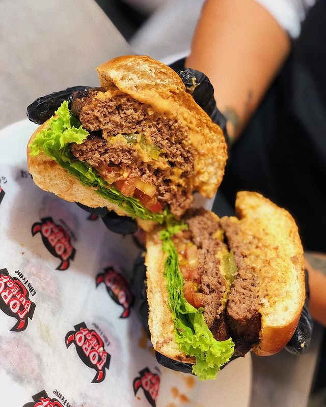

Volver
TORO BURGER @toroburger_cali
Toro Burger es un restaurante de comida rápida especializada en hamburguesas ubicado en San Antonio, uno de los lugares turisticos más reconocidos de la Ciudad.
CALIFICACIÓN: 4/5
Publicado el 17/02/2022 a las 5:48pm por Juan Diego Bustamante
LA DOBLE HAMBURGUESA (HOUSE ANGUS) 
En el menú de este restaurante se encuentra la hamburguesa doble de house angus, que está cargada con dos carnes de res o pollo, con tocineta, lechuga, tomate, en doble capa de queso mozarella, con ripio de papa sostenido por un pan broche. Por 14.500 pesos colombianos se puede degustar esta equilibrada hamburguesa doble en un lugar mágico.